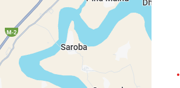

Welcome to My Village Saroba
About My Village

My village’s name is Saroba. It is located near Chakri Interchange.
The people of Saroba are kind, hardworking, and most of them are farmers.
The environment here is calm and refreshing, surrounded by beautiful fields and trees.
Life in Saroba is simple yet fulfilling.
Early in the morning, you can hear the birds singing and see the farmers heading to their fields.
The air is fresh, and the people live close to nature.
Special Things About Saroba
- Green fields and natural beauty
- Fresh environment
- Peaceful life
- Strong community relationships
- Traditional festivals and food
Village Description
Saroba is a beautiful village located near Chakri Interchange. The greenery,
the fresh breeze, and the calm lifestyle make it one of the most peaceful places to live.
People work together during harvest season, share meals, and celebrate local festivals with joy.
The village is surrounded by small hills and streams, where children often play.
The sound of flowing water and rustling trees adds to its charm. Visitors often praise
the hospitality and warm nature of the residents.
Saroba also offers essential facilities for its people. There are two primary schools and one high school
that provide quality education to the children of the area. A small clinic is available for basic medical care,
and nearby towns offer larger hospitals for emergencies. Several general stores and small markets
serve the daily needs of the villagers, from groceries to household items.
The village also has a community mosque, a playground for children, and open green fields where people
often gather in the evenings. With modern roads and easy access to the main city, Saroba is slowly
developing while still maintaining its natural beauty and peaceful lifestyle.
Location on Map
 View Map of Saroba